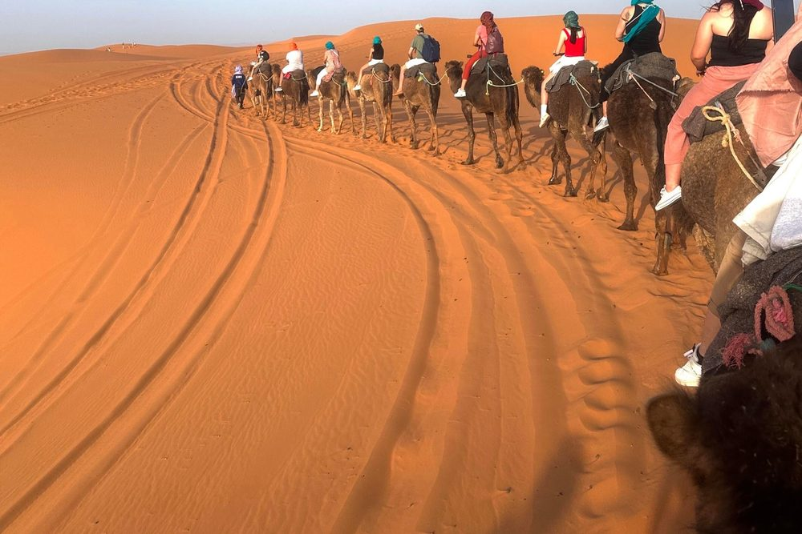

Easter week, known in Spain as Semana Santa, is one of the most popular times of the year to visit Morocco. The weather is mild, the desert is at its most comfortable, the Atlas is still capped with snow and, from southern Spain, Morocco is only a short flight or ferry away. In 2027, Easter falls early, at the end of March, and that changes a few things worth knowing before you book.
In this guide we explain the 2027 dates, what the weather is like, the best routes for 4, 5 and 7 days, how to get there from Spain, what it costs and why you should book early.

Easter 2027 dates
In 2027, Easter week falls in the second half of March:
| Day | Date |
|---|---|
| Palm Sunday | 21 March 2027 |
| Holy Thursday | 25 March 2027 |
| Good Friday | 26 March 2027 |
| Easter Sunday | 28 March 2027 |
| Easter Monday (holiday in some regions) | 29 March 2027 |
Most travellers from Spain leave on Wednesday 24 or Thursday 25 March and come back on Sunday 28 or Monday 29. That is a perfect window for a 4 or 5-day trip to the Sahara. If you can take the whole week, from 20 to 28 March, you can do a complete 7-day tour.
Good to know: Ramadan ends just before
In 2027, Ramadan is expected to run from around 8 February to 9 or 10 March, with Eid al-Fitr celebrated right after. By Easter week, Ramadan will be over and restaurants, cafés and markets will be on their normal hours. Read our guide to travelling during Ramadan if your dates are earlier.
What is the weather like at the end of March?
The end of March is one of the best times of the year in Morocco, but temperatures change a lot between regions:
| Place | Day | Night |
|---|---|---|
| Marrakech | 22–26 °C | 10–12 °C |
| Fes | 19–23 °C | 8–10 °C |
| High Atlas (Tizi n'Tichka) | 8–14 °C | Close to 0 °C |
| Sahara (Merzouga) | 24–28 °C | 10–14 °C |
| Coast (Essaouira) | 19–21 °C | 12–14 °C |
These are typical averages and can change from year to year. Pack in layers: a T-shirt for the day, a warm jacket for the desert night and the mountain pass, and a scarf for the wind and sun. See our guide to what to wear in Morocco.
The best routes for Easter
4 days: Marrakech to Fes through the Sahara
The most popular option for a long weekend. You cross the Atlas, visit Ait Benhaddou, sleep in the Dades Gorges, ride a camel into the Erg Chebbi dunes for a night in a desert camp and finish in Fes. One-way, so you fly into Marrakech and out of Fes, or the other way round.
👉 See the 4-day Marrakech to Fes tour
4 days: Marrakech to Merzouga and back
Ideal if your flight goes in and out of Marrakech. Same highlights (Atlas, Ait Benhaddou, Dades, Todra, a night in the Sahara), with a return to Marrakech on the last day.
👉 See the 4-day Marrakech and Merzouga tour
5 days: more time in the desert
One more day lets you slow down: a full day around Merzouga to visit the Gnawa village of Khamlia, meet nomad families and watch both sunset and sunrise over the dunes.
👉 See the 5-day tour from Marrakech
7 days: the whole week
If you have the full Easter week, a 7-day tour combines Marrakech, the Atlas, the Sahara and Fes at a relaxed pace. Read our detailed 7-day Morocco itinerary.
How to get to Morocco from Spain
By plane
There are direct flights from most Spanish cities to Marrakech, Fes, Tangier and Casablanca, many of them with low-cost airlines. Flights from Madrid and Barcelona take about 1 h 30 to 2 h 30. At Easter, prices go up fast, so book as early as you can.
By ferry
From Tarifa, Algeciras or Málaga, ferries cross to Tangier. It is a good option if you want to bring your own car or start your trip in the north (Tangier, Chefchaouen, Fes). We can pick you up at the port of Tangier and start the tour from there.
Documents
Spanish, EU, UK and US citizens do not need a visa for a tourist stay of up to 90 days, only a passport valid for the length of your stay. Check the details in our Morocco visa guide.
How much does an Easter trip cost?
Easter is high season, so it is better to plan your budget in advance. On a private tour, the price depends mainly on:
- The number of travellers: the vehicle and driver are shared, so the price per person drops a lot when you travel as a group of 4 or more.
- The type of accommodation: traditional riads and kasbahs, or a luxury desert camp.
- The number of days and the route.
As a reference, our 4-day private tour from Marrakech to Fes starts from €350 per person. For a full breakdown of costs, read How much does a trip to Morocco cost?
Why you should book early
Easter is one of the busiest weeks of the year in Morocco, especially with travellers from Spain, France and Italy. What sells out first:
- Desert camps in Merzouga, especially luxury tents with private bathroom.
- Small riads in Marrakech and Fes with good reviews.
- Cheap flights from Spain on Wednesday and Thursday.
Our advice: book your tour 2 to 3 months in advance, ideally before the end of January. That way we can reserve the best camps and riads for your dates.
Practical tips for Easter in Morocco
- Combine flights: arriving in Marrakech and leaving from Fes (or the reverse) saves you a full day of driving.
- Bring cash: in villages and small shops, cards are rarely accepted. Our guide on bargaining and tipping explains how much to carry.
- Book a private tour: on busy dates, a private driver lets you leave early and avoid the crowds at Ait Benhaddou and the dunes.
- Travelling with children? Easter is ideal for families. Read Morocco with kids.
Frequently asked questions
Is Easter a good time to visit Morocco?
Yes, it is one of the best. The weather is mild in the cities and pleasant in the Sahara, and the landscapes are green after the winter rain. The only downside is that it is a busy time, so you need to book early.
Is it Ramadan during Easter 2027?
No. Ramadan 2027 is expected to end around 9 or 10 March, so during Easter week (21 to 28 March) everything works normally. Exact Ramadan dates depend on the sighting of the moon.
How many days do I need for the desert at Easter?
A minimum of 3 days from Marrakech, but 4 days is much more comfortable. With 5 to 7 days you can add Fes, Chefchaouen or a full day in the dunes. See How many days do you need in Morocco?
Is it cold in the desert at the end of March?
The days are warm, but nights in the Sahara can drop to around 10 °C. Desert camps provide warm blankets, but bring a jacket for the evening around the fire.
Can I start the tour from Tangier if I come by ferry?
Yes. We organise tours starting from the port of Tangier, with a route through Chefchaouen and Fes to the Sahara and Marrakech. Tell us your dates and we will design it for you.
Keep reading: Best time to visit Morocco · Desert camps in Merzouga · 7 days in Morocco